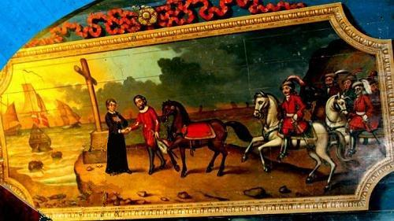
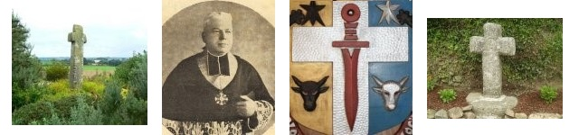

Le Chevalier Bran ou le Prisonnier de Guerre
Knight Bran or the Prisoner of War
Dialecte de Léon
|
- puis en 1845 dans la seconde édition du "Barzhaz". Dans l'"argument" de l'édition de 1845, La Villemarqué indique que ce chant est connu "des paysans d'Armorique et du Pays de Galles, qui le chantent avec quelques variantes seulement". Deux ans après la mort de l'intéressé, il ajoute: "Je dois une version de la ballade dont [Bran] est le sujet à M. le Saint, le digne et respectable recteur de Plouescat ". Cf. Klemmgan Itron Nizon Dans l'édition de 1867, ces deux indications ont disparu, remplacées par l'évocation d'un tableau de l'église de Goulven représentant "les vaisseaux étrangers qui s'éloignent." Effectivement, une peinture naïve, exécutée sur le lambris du transept nord, reproduit l'entrevue du comte Even et de saint Goulven, après la victoire remportée par le comte sur la flotte des Danois - qu'on reconnaît à leur drapeau rouge à croix blanche -, grâce à la prière et à l'intercession du saint ermite. (Cf illustration ci-contre). Selon Luzel et Joseph Loth, cités (P. 389 de son "La Villemarqué") par Francis Gourvil qui se range à leur avis, ce chant historique ferait partie de la catégorie des chants inventés . Diskan (ton : « Bale Arzhur ») Pegen kaer ez eo Mamm Jezuz! Pegen dous ha trugarezus! Pegen mat ha madelezus! Poz 1 (ton : « Marc'heg Bran a zo bet tizhet ») - Lavar din-me, den an Arvor, Ha ken kaer eo da vag war vor, Gand e gouelioù gwenn-kann digor?... (="Quelle est belle la mère de Jésus, Qu'elle est douce et compatissante... 1. Dis-moi, habitant de l'Arvor, ton bateau quand il va sur l'eau, Voile au vent est-il aussi beau?...) La "voile blanche déployée" de ce cantique se retrouve dans un autre chant du Barzhaz de 1845: Le cygne , strophe 3. En cliquant sur le bouton "Chants de 1845" de la colonne ci-contre, on vérifiera que ces divers chants proviennent tous de la même zone restreinte (Laz-Leuhan). |
 Le tableau de l'église de Goulven Ton (La majeur) Comme pour le cantique "Pegen kaer eo Mamm Jezus" (cf. ci-contre), la mélodie du cantique "Enor ha gloar da virviken" combine celle de (8) "Bale Arzhur" pour le refrain et de (14) "Marc'heg Bran", pour les couplets. On entend dans cet extrait Anne Auffret (chant) accompagnée de Jean Baron (bombarde) et Michel Ghesquière (orgue). As for the hymn "Pegen kaer eo Mamm Jezus" (see opposite), the melody of the hymn "Enor ha gloar da virviken" combines that of (8) "Bale Arzhur" for the chorus and (14) "Marc'heg Bran", for the verses. In this excerpt we hear Anne Auffret (vocals) accompanied by Jean Baron (bombard) and Michel Ghesquière (organ). |
- then, in 1845 in the second edition of the "Barzhaz". In the "argument" introducing the song in the 1846 edition, the author asserts that this song is known of both the Breton and Welsh country people, with only slight variants. Two years after the death of the person concerned he states: "I am indebted for a version of the ballad [of Bran] to M. Le Saint, the reverend vicar of Plouescat ". Cf. Klemmgan Itron Nizon In the 1867 edition, these remarks are removed and replaced by the mention of a picture in the church of Goulven showing "the foreign ships sailing away". And, really a naive picture, on the panelling of the northern transept figures the encounter of Count Even with Saint Goulven after the victory over the Danes - whom we can tell by their red flag with a white cross! -, a victory attributed to the saint hermit's intercession. (See opposite picture) According to Luzel and Joseph Loth, quoted by Francis Gourvil (p. 389 of his "La Villemarqué"), this historical song was " invented " by its alleged collector. Diskan (ton : « Bale Arzhur ») Pegen kaer ez eo Mamm Jezuz! Pegen dous ha trugarezus! Pegen mat ha madelezus! Poz 1 (ton : « Marc'heg Bran a zo bet tizhet ») - Lavar din-me, den an Arvor, Ha ken kaer eo da vag war vor, Gand e gouelioù gwenn-kann digor?... (= How beautiful is the mother of Jesus, How gracious and compassionate she is... 1. Tell me, inhabitant of Arvor, When your boat goes on the water, Is her spread white sail so beautiful?...) The "white sail spread" in this song is found in another 1845 Barzhaz song, namely: The Swan , stanza 3. By clicking on the "Chants de 1845" button in the opposite column, you will satisfy yourself that these various songs all come from the same (Laz-Leuhan) tight area . |
| Français | English |
|---|---|
|
1. Blessé fut le Chevalier Bran, A la bataille de Kerlouan, 2. A Kerlouan, face à l'océan, Le petit fils de Bran le Grand. 3. Prisonnier, bien que victorieux, Il traverse l'océan bleu. (*) 4. Quand en exil il arriva, Dans une tour on l'enferma. 5. - Ils exultent là-bas les miens; Je gis blessé, plein de chagrin! 6. Y-a-t-il un messager ici? Qu'à ma mère il porte ce pli! - 7. Au messager que l'on trouva Voici ce qu'il recommanda: 8. - Bon messager, déguise-toi En mendiant, qu'on ne te voie pas! 9. Prends cet anneau d'or: le blason Sera ta justification. 10. Il faut, sitôt rendu là-bas, Que ma noble mère le voit. 11. Quand elle vient payer rançon, Que la nef ait blanc pavillon. 12. Si hélas elle ne vient pas, Pavillon noir tu déploieras! - II 13. Quand l'homme en Léon arrivait La dame était à son souper. 14. Avec sa famille attablée, De joueurs de harpe entourée. 15. - Bonsoir, dame de ce château. De votre fils, voici l'anneau, 16. L'anneau pour le faire connaître Et lisez vite cette lettre! 17. - Joueurs de harpe, assez de chants! J'ai le coeur bien triste à présent. 18. Joueurs de harpe, c'est assez: On retient mon fils prisonnier! 19. Qu'on m'équipe vite un vaisseau: Je passerai la mer tantôt! III 20. Le lendemain, Bran de son lit Demandait aux gens, près de lui: 21. - O guetteur, guetteur, dis-moi donc: Pas une voile à l'horizon? 22. - Je ne vois, seigneur chevalier Que le ciel et les flots dorés. - 23. Le seigneur Bran quand fut midi, De la sentinelle s'enquit: 24. - O sentinelle, réponds-moi Vois-tu le vaisseau cette fois? 25. - Seigneur chevalier, je ne vois Que les goélands qui tournoient. - 26. Le seigneur Bran quand vint le soir Gardait encore un peu d'espoir: 27. - guetteur, guetteur, regarde bien, Ne vois-tu pas la nef qui vient? 28. A ces mots le guetteur félon Sourit méchamment et répond: 29. - J'aperçois un navire au loin. Que battent les vents et l'embrun. 30. - Son pavillon, peux-tu le voir? Réponds! Est-il blanc? Est-il noir? 31. - Il est noir, si j'en crois mes yeux, Oui, j'en mettrais ma main au feu! - 32. Le chevalier aussitôt Se détourna sans dire un mot, 33. Pâle. On voyait trembler ses lèvres. Il était miné par la fièvre. IV 34. Tandis que la dame abordait, Aux citadins elle disait: 35. - Qu'y a-t-il de nouveau céans, Pourquoi ces cloches que j'entends? 36. Puis elle interroge un vieillard Lequel lui répondit sans fard:. 37. - Un chevalier qu'on avait pris Est mort en prison cette nuit... - 38. Il veut poursuivre son discours, Mais la dame court vers la tour, 39. En pleurant et se lamentant. On voit flotter ses cheveux blancs. 40. Tous ces citadins s'étonnaient En voyant le deuil que menait 41. Par les rues cette étrange dame Qui soupirait à fendre l'âme. 42. On murmure par les ruelles - Qui est-ce donc? Et d'où vient-elle? - 43. La pauvre dame au gardien dit Qui de la tour surveillait l'huis: 44. - Je veux, ouvre-moi cette porte, Voir mon fils avant qu'on l'emporte! - 45. On ouvrit: son fils était mort. Elle se jeta sur le corps 46. Et le serrait entre ses bras, Plus jamais ne se releva. (**) V 47. Un chêne surplombe le champ D'honneur et la grève, à Kerlouan. 48. C'est là que les Saxons ont pris La fuite quand Even surgit. 49. Sur ce chêne, les nuits de lune Les oiseaux de diverses plumes 50. S'assemblent, des noirs et des blancs, D'autres au front taché de sang. 51. Ainsi qu'une corneille grise Qu'un jeune corbeau l'on voit suivre. (***) 52. Ailes mouillées, bien las tous deux, D'avoir franchi l'océan bleu. (*) 53. Puis le chant des oiseaux commence, Si beau que la mer fait silence. 54. Tous entonnent ce chant si beau Sauf la corneille et le corbeau. 55. Le corbeau dit: - Oiseaux chantez! Vous n'avez rien à regretter: 56. Vous mourûtes en ces campagnes, Mais nous, si loin de la Bretagne. - Il s'agit sans doute d'une lecture irraisonnée du dictionnaire vannetais de L'Armery ou ce mot est traduit "outre-mer", le mot "bleu" étant sous-entendu. Cette bévue prouve que la pièce a été remaniée par son collecteur, non qu'elle a été inventée d'un bout à l'autre. On retrouve cette même erreur dans "La ceinture de noces" , strophes 9 et 26. (**) Vers identique dans "Sire Nann" -strophe 47. (***) "Bran" signifie "corbeau". Pour désigner les "oiseaux" le poème utilise, de façon surprenante, le mot "adar" (str. 49 et 50) dont une fois à la rime, dont le dictionnaire du Père Grégoire dit qu'il est suranné, mais en usage dans le nom breton de l'Île d'Ar: "Enez Adar", l'Île aux Oiseaux. Tout comme le mot "kad", aux strophes 1 et 2, c'est un mot gallois que l'on ne trouve que dans le dictionnaire de Dom Le Pelletier. La signification donnée au composé "Bran-Vor", Bran-le-Grand (str.2) est insolite. "Corbeau-de-Mer" serait plus usuel. Traduction: Christian Souchon (c) 2008 |
1. Wounded, alas, was the knight Bran When he was fighting at Kerlouan. 2. At Kerlouan, by the seashore. He was a grandson to Bran-Vor (Bran the Great) . 3. Captured, despite our victory, And he was borne beyond the sea. (*) 4. Beyond the sea, when he arrived, He was shut in a tower. He cried: 5. - My parents exult and rejoice; I lie in bed, no other choice! 6. I wish I had a messenger Who brought my mother a letter! - 7. And when the messenger was found He has given him instructions: 8. - You should don another garment: Beggar's clothes to be consistent. 9. Take this gold ring of mine with you. As a proof that you speak the truth. 10. Once you have come to my country Show it to my mother promptly. 11. And if she comes to redeem me, Atop the mast a white flag be! 12. But if she doesn't come, alas! Let a black flag hang from the mast! - II 13. When the man arrived in Leon The dame was in her dinner room, 14. Sitting with all her family. The harpers played a melody. 15. - Good evening, Lady of this house: From your son Bran this ring I brought; 16. This ring of gold and this letter. Please read it and do not linger. 17. - Stop, harpers, enough of this song! For my poor heart suffers great wrong. 18. Stop your song, harpers, stop and go! My son was caught: I did not know! 19. Prepare a ship tonight for me: Tomorrow I shall cross the sea. III 20. Next morning, lying on his bed Young knight Bran leant forward and said: 21. - Sentinel, sentinel tell me, Don't you see a ship on the sea? 22. - Lord, I see nothing, far and nigh, Except the ocean and the sky. - 23. Knight Bran asked again the sentry When he brought his meal at midday: 24. - Sentinel, sentinel, tell me, Don't you see a ship on the sea? 25. - My lord the knight, I see nothing Except flocks of sea-birds flying. 26. Knight Bran asked the sentry again In the evening when sunset came. 27. - Sentinel, sentinel, tell me, Don't you see a ship on the sea? 28. The false sentry was prompt to hear And to answer him with a sneer: 29. - In the distance I see a sail That is strongly whipped by the gale. 30. - Sentry, tell me! What kind of flag? Sentry! Is it white? Is it black? 31. - Lord, it's a black flag I see there To the truth of it I can swear. - 32. When the hapless knight so much heard He leant back without a word. 33. His livid face he turned away Fever over him now held sway. IV 34. On landing, the dame eagerly Asked the folks of the city. 35. - What is the matter with your town? The bells toll. What is going on? 36. An old man answered the question And gave her this explanation: 37. - A prisoner was here, a knight Who died in the tower overnight,... - 38. And he had hardly spoken thus When for the tower she made a rush, 39. And cried bitterly, as she ran, With her hoary hair all undone. 40. Everybody in town wondered Quite a lot when they considered. 41. This lady that came from abroad With moans and mourning cries so loud. 42. - Who is she, asked everybody Whence does she come? From which country? - 43. The poor lady asked the porter Who stayed at the foot of the tower: 44. - Quick, do open this door to me I'll see my son, immediately! - 45. The large door opened heavily. She threw herself on the body. 46. She embraced her son with sad cries And was never again to rise. (**) V 47. On the battle field, at Kerlouan An oak stands over the ocean. 48. An oak stands there where the Saxon Was put to flight by Great Even. 49. On this very oak, by moon light, Birds will gather every night. 50. Fowls of the sea, black and white birds, A blaze of blood on their foreheads, 51. Alongside with them a white Crow A young raven with her, also. (***) 52. Both of them weary, with wet wings, Since they've been o'er the sea flowing. (*) 53. And all the birds strike up a tune So beautiful that the sea soon 54. Keeps silent. All the birds sing low Except the Raven and the Crow. 55. Now the Raven has said to them: - O sing, little birds, sing again! 56. You died here, birds of this country! We died so far from Brittany! - The same error was made in "The Wedding Belt" , stanzas 9 and 26. (**) Same verse as in "Sir Nann" - verse 47. (***) "Bran" means "raven". For "birds" the ballad resorts, surprisingly, to the word "adar" (st. 49 and 50), once as a rhyme to "loar", though it is given in Father Grégoire's dictionary as outdated, only in use in the Breton name of the Island Ar: "Enez Adar", (Birds Island). Like the word "kad", in stanzas 1 and 2, it is a Welsh word to be found only in Dom Le Pelletier's dictionary. Also the meaning ascribed to the compound "Bran-Vor", Bran-the -Great (st.2) is surprising. The expected meaning is "Sea-Raven". Translated by Christian Souchon (c) 2008 |
Vers le texte breton
To the Breton text

|
Résumé
Le chevalier Bran, blessé à la bataille de Kerlouan est emmené outre-mer par l'ennemi. De sa prison, il envoie un messager qui porte à sa mère son anneau d'or comme signe de reconnaissance et celle-ci s'embarque sur un navire arborant un pavillon blanc. La sentinelle, par traîtrise, annonce au blessé que le vaisseau qui approche bat pavillon noir et Bran rend l'âme. Sur le champ de bataille, à Kerlouan, où Even le Grand vainquit les Saxons il y a un chêne où chaque nuit s'assemblent les oiseaux de mer. Parmi eux, une vieille corneille grisonnante, avec elle un jeune corbeau. Et les autres oiseaux, qui portent au front une tache rouge, leur chantent un chant si beau que la grande mer fait silence.("Bran" signifie"corbeau") Ce que nous apprend l'histoire Le cartulaire de Landévénec parle d'un Comte de Léon nommé Even. On admet (après Dom Morice , auteur d'une '"Histoire de Bretagne" -1746) qu'il seconda les efforts d' Alain II Barbetorte , devenu Duc de Bretagne en 937, après son retour d'Angleterre où son père s'était réfugié 17 ans plus tôt, en remportant la même année la victoire de Kerlouan ou Runéven (près de Lesneven) sur les Normands (et non les Saxons). Quant au chevalier Bran, peut-être a-t-il donné son nom au lieu-dit "Neis-Vran" sur la côte, près de Kerlouan. Il n'est pas aisé de savoir qui était Even le Grand, compagnon de Nominoë et vainqueur à Runéven-Kerlouan en 937. On lit dans les "Annales" de Flodoard , historien qui vécut de 894 à 966: "En l'an 937, après un long exil hors de Bretagne, les Bretons reviennent chez eux et combattent, sans discontinuer, contre les Normands qui s'étaient emparés de leurs terres et, vainqueurs dans la plupart des combats, ils rentrent en possession de leur pays". La Borderie ajoute : "De cette campagne, nous ne connaissons que deux épisodes: la prise de Nantes (937) et la bataille de Runéven". Toute cette libération avait été préparée par Jean de Landévennec , moine en exil, à Montreuil-sur-Mer. La paix revenue, les moines reviennent à Landévennec qui se voit attribuer un certain nombre de possessions par le duc Alain Barbetorte. Le choc à Runéven dut être terrible à en juger par les toponymes qu'il a peut-être inspirés: "Goarem al Lac'hou" (Gwaremm al lazhoù=Lande des tueries), "Tachen ar c'hlas vras" (Tachenn al lazh vras=Terrain du grand massacre),"Ar roc'h lac'h" (Ar Roc'h Lazh= Roche du carnage), "Park goadénoc" (Park gwadennek=Champ ensanglanté), "Lanvrein" (Le charnier). Ce que confirme ce passage de la "Vie de saint Goulven": « Le comte Even, homme très chrétien (vir christinissimus), attaquant les ennemis avec vigueur (invasit hostes alacriter), les vainquit et les chassa loin devant lui (victor longius illos exturbavit) ; il fit un grand massacre des fuyards (multa fugientes strage occidit) et leur reprit tout leur butin. Bien peu purent échapper par la fuite et, se cachant ça et là parmi les rochers (paucis fuga evadentibus et per littora sparsim scrupulosa latitantibus), reprirent la mer. Jamais plus, ils nosèrent porter dommage à la terre de Léon (qui eadem maria per quae venerant relegentes, nunquam postea terrae illi ausi sunt damnum aliquid attemptare) ». Il est heureux que ce personnage ait été très chrétien! Un problème de dates Even le Grand est réputé avoir vaincu les Normands à Runéven (Run= "Tertre"), un lieu-dit de Plouider (au nord du Folgoët- Lesnéven et Landerneau). C'est ce que nous apprend la "Vie de Saint Goulven" (en latin, XIIème siècle), un saint qui donne son nom à la commune voisine et à la grève qui la borde.Selon la "Vita", iIl aurait vécu, non pas au Xème, mais au VIème siècle. - L'historien Dom Lobineau (1667-1727) en déduit "Le comte Even vivait au Xème siècle, il a eu recours à Saint Goulven. C'est donc que saint Goulven de Léon vivait aussi au Xème siècle." - Arthur de La Borderie (1827-1901) , quant à lui, suggère que "Quand Even eut à combattre les Normands, saint Goulven était depuis trois siècles le grand patron du pays de Lesnéven. Avant de marcher au combat il [alla] s'agenouiller au Peniti (ermitage) de saint Goulven..." et les générations suivantes imaginérent ces dialogues entre le comte et le saint que rapporte la "Vie" latine. - Le chanoine Hervé Calvez (1872-1946), auteur d'une étude sur la bataille de Runéven, penche plutôt pour l'existence de toute une dynastie de comtes de Léon nommés Even, dont deux auraient combattu les Normands, l'un du vivant de Saint Goulven, l'autre," le Grand", du temps de Nominoë. Deux autres "chants de Normands" Selon le chanoine Calvez, les croix qui s'élèvent un peu partout, de Questembert jusqu'à Runéven commémorent les victoires des Bretons sur les Normands. Elles proclament que cette guerre libératrice était aussi une croisade. La tradition orale vient parfois suppléer aux vides béants laissés par les sources écrites.
Cet abbé assure également (est-ce la complainte qui le dit?) que les femmes de Trémaouézan accompagnèrent les hommes au combat. La toponomie locale, tout le long de l'ancienne route qui allait de Landerneau jusqu'à la mer permet de mesurer l'étendue du champ de bataille: "Bali Lahérez" (Bali Lazherzh= allée du Carnage), "Croas ar Vurzun" (Kroaz ar Vruzhun= Croix du massacre), village de "Lac'hus" (Lazhus=exténuant), terre dénommée "Park Lamm-Saoz" (Champ du Saut du Saxon, qu'on peut comprendre comme la défaite du Normand).
Selon La Borderie, un massacre à Lanrivoaré aurait aussi été vengé par le comte Even, dont la dernière bataille sera celle de Kerlouan-Runéven . Bran et la légende de Tristan et Iseut Il serait vain de rapprocher ce Bran de notre gwerz, de "Bran le fils béni de Llyr" des Mabinogion gallois -lequel ressemble fort, par ailleurs, au roi pêcheur de Parsifal. En revanche on retrouve dans la présente histoire des éléments essentiels - le déguisement, l'anneau d'or, le geôlier perfide, le pavillon noir et le pavillon blanc - du roman de Tristan (12ème siècle). Cela n'a pas échappé à La Villemarqué , qui cite dans sa "note" le passage de la mort d'Yseult où ce parallélisme est frappant. Mais on a du mal à le suivre quand il prétend démontrer l'antériorité du chant breton en invoquant un acte de 1069 où un joueur de harpe nommé Kadiou aurait signé "avant sept moines", ce qui reflèterait un ordre social comparable à celui décrit dans le chant, où les harpistes occupent un rang très honorable dans les châteaux armoricains... Dans son "Tristan", Wagner remplace le pavillon noir et le pavillon blanc, par un chant de pâtre (Hirtenweise) triste ou gai. Quoi qu'il en soit, le thème de la voile noire et de la voile blanche est bien plus ancien que ces références celtes. On le trouve dans la légende de Thésée, rapportée, entre autres, par Apollodore dans "La Bibliothèque", Epitomè I, que l'on date du 1er ou du 2ème siècle après J.C.:
De là le nom de la "Mer Egée". |
Résumé
Bran the Knight, wounded on Kerlouan battlefield, was captured and abducted "beyond the sea". From his jail he sends a messenger who brings Bran's mother his golden ring as a sign of recognition and she embarks on a ship bearing a white flag. The sentry, traitorously, announces the wounded knight that the approaching vessel bears a black flag and Bran dies. Near Kerlouan, where Even the Great defeated the Saxons, an oak stands. There, every night, sea birds gather. Among them, an old, grey-feathered she-crow and, with her, a young raven. And for them the other birds, each of them with a blood stain on its brow, sing a song that is so melodious that the ocean keeps silent. ("Bran" means "crow, raven") What we learn from history The Landévénec Mapbook mentions an Earl of Leon named Even, who, according to Dom Morice (the author of a "History of Brittany" in 1746), assisted the endeavours of Alan II Twistedbeard . The latter became Duke of Brittany in 937, on his return from England where he had fled with his father 17 years earlier, after he had defeated the Norsemen (and not the Saxons) the same year at Kerlouan / Runéven (near Lesneven). As to the Knight Bran, he could have given his name to the hamlet "Neis-Vran" on the shore, near Kerlouan. It is not easy to decide who was Even the Great, a companion of Nominoë who carried the day at Runéven-Kerlouan in 937. We read in the "Annals" composed by Flodoard , a historian who lived from 894 to 966: "In the year 937, after a long exile afar, the Bretons returned home and fought, without a respite, against the Normans who had seized their land and, winners in most fights, they were soon again in possession of their country". La Borderie adds: "Of this campaign, we know only two marking episodes: the capture of Nantes (937) and the Battle of Runéven". The liberation of the country was achieved thanks to Jean de Landévennec , a monk in exile at Montreuil-sur-Mer. When peace returned, the monks also returned to Landévennec Abbey which was granted several large estates by Duke Alan Twisted-Beard. The battle of Runéven must have been terrible, judging by the toponyms it may have inspired: "Goarem al Lac'hou" (Gwaremm al lazhoù = Slaughter heath), "Tachen ar c'hlas vras" (Tachenn al lazh vras ??= Land of the Great Massacre), "Ar roc'h lac'h" (Ar Roc ' h Lazh = Rock of carnage), "Park goadenoc" (Park gwadennek = Bloody Field), "Lanvrein" (The Mass Grave). Which is confirmed by this excerpt from the "Life of Saint Goulven": "Count Even, a very Christian man (vir christinissimus), attacking enemies with vigor (invasit hostes alacriter), defeated them and drove them far before him (victor longius illos exturbavit); he made a great massacre of the fugitives (multa fugientes strage occidit) and took back all their booty. Very few could escape, and, hiding here and there among the rocks (paucis fuga evadentibus and per littora sparsim scrupulosa latitantibus), took to the sea. Never again dared they to bring damage to the land of Leon (qui eadem maria per quae venerant relegentes, nunquam postea terrae illi ausi sunt damnum aliquid attemptare) ". Fortunately, this character was a very Christian man! An issue of dates Even the Great is supposed to have defeated the Normans at Runéven (Run = "Knoll"), a locality near Plouider (north of Folgoët-Lesnéven and Landerneau). This is what we learn from the Latin "Life of Saint Goulven" (XII century), a saint who gave his name to both the neighbouring town and the adjoining firth. This "Vita" states that he lived, not in the tenth, but the sixth century. - The historian Dom Lobineau (1667-1727) infers that "since Count Even lived in the tenth century and interacted with Saint Goulven of Leon, Saint Goulven also lived in the tenth century." - Arthur de La Borderie (1827-1901), meanwhile, suggests that "When Even was to fight the Normans, Saint Goulven had been for three centuries the great patron saint of the country of Lesneven. Before going to fight, he prayed on his knees at Saint Goulven's Peniti (hermitage) ... " so that the following generations imagined the dialogues between the Count and the Saint recorded in the Latin "Life". - Canon Hervé Calvez (1872-1946), author of a study on the Battle of Runéven, leans rather for the existence of a whole dynasty of counts of Léon named Even, two of which would have fought the Normans, one of the living Saint Goulven, the other, "the Great", the time of Nominoë. Two more "Norman songs" According to Canon Calvez, the crosses that rise everywhere along a line from Questembert to Runéven commemorate the victories of the Bretons over the Normans. They proclaim that this liberating war was also a crusade. Oral tradition sometimes replaces the gaping voids left by written sources. That is what they sing in an old ballad:
This priest also asserts (or is it the complaint that says it?) that the women of Trémaouézan accompanied their husbands and sons in combat. The local placenames, all along the old road that went from Landerneau up to the sea shore, assess the extent of the battlefield: "Bali Lahérez" (Bali Lazherzh = The Alley of the Carnage), "Croas ar Vurzun" (Kroaz ar Vruzhun = The Cross of the massacre), "Lac'hus" village (Lazhus = The Grueling Place ), an estate called "Park Lamm-Saoz" (Saxon's Jump Field, which perhaps means "Norman Defeat"). To the north-east of Lesneven, the Priory of Lochrist - An Izelvez ("Of Christ with low trees"), probably erected in the 6th century, recalls, beside a small trickery of La Villemarqué's deviced to make a song look older (see La fiancée de Satan's Bride ), another battle which was fought by Saint. Fragan, Saint Guénolé's father. Saint Fragan gave his name to the nearby parish west of Plouider, St-Frégant. After they were beaten a first time, the enemies, as stated in the "Life of Saint Guénolé ", came back in so great numbers that the scout of Fragan and Guénolé's small army exclaimed: " Me a wel mil gwern! " (I see a thousand masts!) There was erected in this place a cross called, still now, "Kroaz ar mil gwern." The pirates were beaten and the spoils taken from them were used to build a monastery in honor of the Holy Cross. Canon Calvez, who would tend to attribute this victory, not to Fragan, but Count Even 4 centuries later, tells us, without going any further into it, that: "Lochrist an Izelvez was founded, as the Breton poet sings:
According to La Borderie, a massacre perpetrated at Lanrivoare would also have been avenged by Count Even, whose last battle was that of Kerlouan-Runéven. Bran and the Tristan and Yseult legend. It would be vain to try to identify this Bran with "Bran the blessed son of Llyr" we find in the Welsh "Mabinogion -but the latter is similar to the king fisher in "Parsifal". But the parallels of essential elements in the present story - disguise, gold ring, false sentinel, black flag and white flag - with the Romance of Tristan" (12th century) are too salient to be coincidental. This could not escape La Villemarqué, who quotes in his "note" to this song an excerpt recounting Iseult's death where the similarity is obvious. However it is difficult to be convinced by his painstaking demonstration of the anteriority of the Breton song based on an act passed in 1069 where a harper's signature precedes "the names of seven monks", which denotes allegedly a social structure like the one described in the song, with harpers who appear to be very much in honour in Breton castles...In his "Tristan" Wagner replaces the black and the white flag with a sad and a joyful shepherd's tune. Anyway, the story of the sail to be changed from black to white is, by far, older than these Celtic references. It is to be found, among others, in Theseus' legend as recounted by Apollodorus in his "Library", Epitomè I, generally dated to the 1st or the 2nd century after Christ:
Hence the name "Aegean Sea". |

Croix des mille mats, Chanoine Calvez, Blason de Plouider avec, en son centre, la Croix à épée de Runéven
 "Le Prisonnier de Kerloan" par Yvette Guilbert (cliquer sur "+" pour ouvrir)
"Le Prisonnier de Kerloan" par Yvette Guilbert (cliquer sur "+" pour ouvrir)